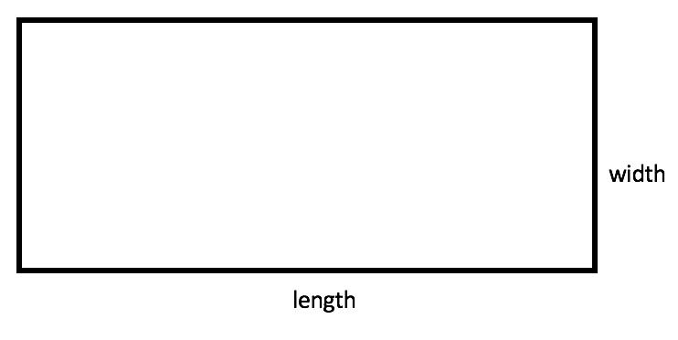
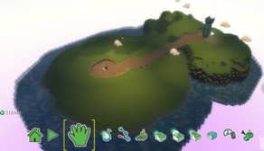
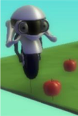
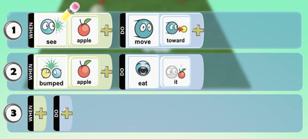
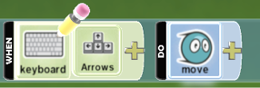
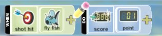

Do It! Kodu: Treasure Hunt
 The Challenge
The Challenge
Your challenge is to create a computer treasure hunt game and explore ways to make it better.
You will create your own world, hide treasure in your world, and then program a character to find the hidden treasure. Finally, you will use parentheses and brackets in numerical expressions to create and explore your world. But do not stop there: What will you do next to make your game experience even better?
Project Steps
-
Plan Your Game Using Numerical Expressions
-
Create Your Treasure Hunt World
-
Improve Your Game
Plan Your Game Using Numerical Expressions
Computer programmers plan out their game worlds before they create them in a digital space. Use paper and pencil to plan out what your world will look like.
- Start with the size. How much space does your game need?
- Draw a rectangle to represent your game world.
- Use a ruler to measure the length and width.
- The area can be found by multiplying these two dimensions. Determine the area.
- What would the total area of your world be if you doubled your current area? Use the expression 2 (l×w).
- Glass can be used to help keep your characters from falling off the edge. How much glass is needed to surround your world? Write a numerical expression to figure out the perimeter of your world. Use parentheses and/or brackets if you can.
- How will you use treasure in your world? Consider placing your treasure in different regions of your world (desert, forest, ocean, etc.). Use a numerical expression with parentheses to describe the amount of treasure in your world. One idea is to describe the amount of treasure by adding or multiplying the amount from each region. Another idea is to represent how much of each type of treasure can be found. Be creative with your expression.
Create Your Treasure Hunt World
Build the Landscape
- When you create your terrain, use a New World that opens with a green square.
- Start the Kodu Game Lab software.
- Open a New World.
- Change the green square of land to make your own world. Create hills, valleys, and change the colors. Try to recreate the design you created.
 
Add a Glass Wall
If you are not careful, characters can fall off the edge of a world. One way to avoid this is to surround it with a glass wall.
- Select the Settings button.
- Scroll through the menu until you find Glass Walls.
- Click the on/off button. Glass Walls are on when the button turns green.
Add Objects
A treasure hunt needs treasure and someone to find it.
- Add some apples.
- Add a Cycle Object.
- Program the Cycle to find and eat the apples. (Hint: you will need to program the Cycle to move toward the first apple that it sees. When the Cycle bumps into the apple, it should eat the apple.)
- Save your Hunt for Treasure World.

Improve Your Game
What can you do to make your game better?
- Use the landscape tools to add features.
- Add other objects to your world like trees, rocks, or buildings.
- Add places to hide or store treasure.
- Add or change the characters. Figure out which Kodu characters have behaviors that work for a treasure hunt activity.
- Program one character to find one type of treasure and a different character to find a different treasure.
- Program characters to avoid certain objects during the treasure hunt.
- Program the characters to move with keyboard controls. Steer the character to the treasure.
- Add a timer and scoring to the game.
- Program “win” or “end” screens to signal the end of the game.
- Program one character that collects treasure by itself and one you control with your keyboard. See who can pick up treasure faster.

